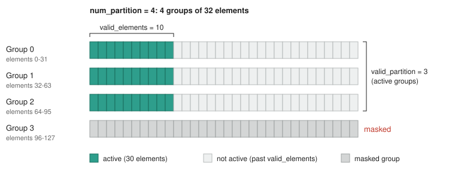
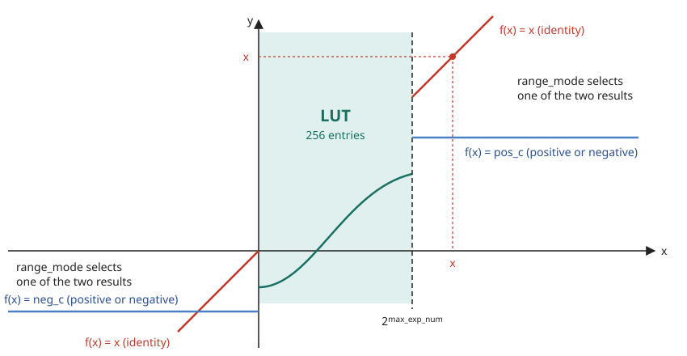
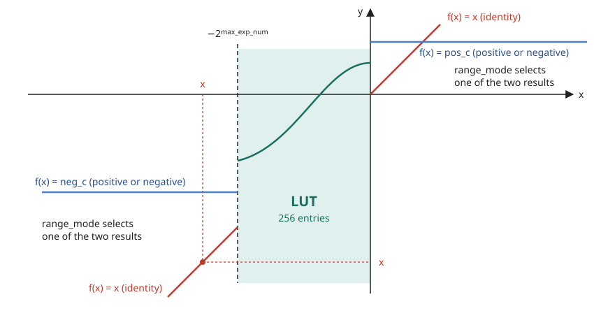
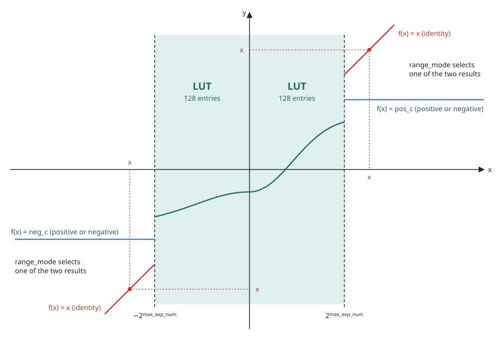

AaQ Stage¶
1. Overview¶
The AaQ (Activation and Quantization) stage perfome the following tasks:
- Activation: The stage applies activation functions and special functions to each element of the fp32 vector. ReLU and GeLU are examples of the activation functions.
- Quantization: The stage changes each fp32 element into the NX8 format. The quantization method is fixed or dynamic.
- Store: After the quantization, the stage writes the result to XMEM.
Note: A configurable lookup table (LUT) implements some of the activation functions and special functions.
Table of Contents¶
- Overview
- Block Diagram
- Interfaces
- AaQ-Str ISA
- 4.1
NOP: No Operation - 4.2
LOAD_LUT: Load Function Estimation LUT Segment- 4.2.1 Function Estimation LUT
- 4.2.2 Metadata Block
- 4.2.3 LUT Addressing
- 4.3
ACTIVATE.QUANTIZE: Activate and Quantize- 4.3.1 Activate
- 4.3.2 Quantize
- 4.3.2.1 Block Scale and Exponent Distance
- 4.3.2.2 Exponent and Mantissa Encoding
- 4.3.2.3 Dynamic Exponent Selection
- 4.3.3 Store
- 4.1
2. Block Diagram¶
block-beta
columns 7
block:INS:1
columns 1
ACC_OUT["input data<br>128 x fp32"]
INSTR["Instruction"]
end
space
block:STAGE:3
columns 3
TITLE["AaQ Stage"] space:2
ACT["Activation"] space QUANT["Quantization"]
space:3
LUT["LUT"] space:2
end
space
block:OUTS:1
columns 1
NX_OUT["output data<br>128 x NX"]
XMEM_ADDR["XMEM write<br>address"]
end
ACC_OUT --> ACT
INSTR --> ACT
ACT --> QUANT
ACT <--> LUT
QUANT --> NX_OUT
QUANT --> XMEM_ADDR
classDef io fill:none,stroke:none
classDef blk fill:#2e9e8c,stroke:#1a7060,color:#fff
classDef title fill:none,stroke:none,font-weight:bold
class ACC_OUT,INSTR,NX_OUT,XMEM_ADDR,INS,OUTS io
class ACT,QUANT,LUT blk
class TITLE title
style STAGE fill:none,stroke:#888,stroke-width:2px3. Interfaces¶
| Name | Direction | Description |
|---|---|---|
| input data | Input | The 128-element fp32 vector from the ACC stage. |
| Instruction | Input | The operation that the stage does on the input data. |
| output data | Output | The 128-element NX vector. |
| XMEM write address | Output | The XMEM address to which the stage writes the output data. |
3.1 quantizion_format Layout¶
The quantizion_format operand names a 32-bit CR that holds the quantization
format. It has four 8-bit fields:
| Bits | Field | Description |
|---|---|---|
[31:24] |
dynamic_static |
0 = static, 1 = dynamic. In dynamic mode, the exponent format is e1 or e2 (section 4.3.2.3). |
[23:16] |
sign |
0 = unsigned, 1 = signed. |
[15:8] |
num_bits |
Total element width W: 1-8. 0 is reserved/invalid. |
[7:0] |
exponent_format |
Exponent width fe in static mode: 1-7 = e1-e7. |
3.2 Active Elements¶
CR layout (dstructure)¶
The dstructure operand names a 32-bit CR that holds the data structure
format (DS) of the 128-element vector. It has four 8-bit fields:
| Bits | Field | Description |
|---|---|---|
[31:24] |
N/A |
Not used. |
[23:16] |
valid_partition |
Number of valid groups. The rightmost num_partition - valid_partition groups are masked. |
[15:8] |
num_partition |
Number of groups: 1, 2, 4 or 8. 1 means one line of 128 elements, 2 means two lines of 64 elements. |
[7:0] |
valid_elements |
Number of valid elements in a group. |
Active elements rule¶
The dstructure fields select which of the 128 elements are active.
The 128 elements are split into num_partition equal groups.
Each group has group_size = 128 / num_partition elements. Then:
- Only the first
valid_partitiongroups are active. The remaining groups are masked. - In each active group, only the first
valid_elementselements are active.
group_size = 128 / num_partition
active[i] = (i / group_size < valid_partition) and (i % group_size < valid_elements)
Example: num_partition = 4, valid_partition = 3, valid_elements = 10.
Each group has 32 elements, so active elements are 0-9, 32-41 and 64-73
(30 elements). Group 3 (96-127) is masked.

4. AaQ-Str ISA¶
The AaQ slot is resolved by CTRL and forwarded down the pipeline. The stage does not read the CR/LR register files itself (see the Control Stage spec, section 5).
The opcode enum (aaq_inst_opcode_t, package ipu_instr_pkg) is generated
from instruction_spec.py
by sv_package.py.
Note: Each
CR0-CR15andLR0-LR15register named in the instruction operands is 32 bits wide.
Instructions in this section:
| Instruction | Purpose |
|---|---|
NOP |
Do nothing. |
LOAD_LUT |
Fill the function estimation LUT. |
ACTIVATE.QUANTIZE |
Activate, quantize and store. |
4.1 NOP: No Operation¶
No operation for the AaQ slot.
Syntax¶
Operands¶
None.
Example¶
4.2 LOAD_LUT: Load Function Estimation LUT Segment¶
LOAD_LUT fills one segment (1024 bits) of the function estimation LUT
(section 4.2.1). The data comes from the lower 32 words of input data.
lut_addr selects which segment is written:
lut_addr |
What it loads |
|---|---|
0-3 |
One 1024-bit slice of the table. |
4 |
The last 256 bits of the table, plus the metadata block (section 4.2.2). |
Syntax¶
Operands¶
| Name | Type | Details |
|---|---|---|
lut_addr |
Imm |
0-4. LUT segment index: 0-3 = table slices, 4 = last table bits + metadata. |
table_id |
CrIdx |
CR0-CR15. Supplies the table ID. |
table_offset |
LrIdx |
LR0-LR15. Supplies the offset in the table. |
Operation¶
payload[1023:0] = {input_data[31], ..., input_data[0]} // 32 words x 32 bits
if lut_addr <= 3: // full table slice
TABLE_BITS[1024*lut_addr +: 1024] = payload
else if lut_addr == 4: // last table bits + metadata
TABLE_BITS[4351:4096] = payload[255:0]
{pos_mode, neg_mode, range_mode, pos_c, neg_c, max_exp_num} = payload[301:256]
// field layout in section 4.2.2
Example¶
4.2.1 Function Estimation LUT¶
The stage holds one function estimation LUT. It has two parts:
| Part | Size | Purpose |
|---|---|---|
| Table | 256 entries x 17 bits = 4,352 bits | The function values. |
| Metadata block | 46 bits | Configures range handling. |
Both parts are filled by LOAD_LUT, one segment per instruction. The 3-bit
lut_addr selects the segment. Five LOAD_LUT instructions (lut_addr
0-4) program the whole LUT.
4.2.2 Metadata Block¶
Where it lives. The metadata is in bits [301:256] of the lut_addr = 4
payload.
Fields.
| Local bits | Name | Meaning |
|---|---|---|
[7:0] |
max_exp_num |
Largest biased FP32 exponent still inside the LUT range. exp > max_exp_num flags the element as out-of-range. |
[24:8] |
neg_c |
17-bit constant substituted for negative out-of-range elements. |
[41:25] |
pos_c |
17-bit constant substituted for positive out-of-range elements. |
[43:42] |
range_mode |
LUT version. See the range_mode table. |
[44] |
neg_mode |
Result for negative out-of-range elements: 0 = x (identity), 1 = neg_c. |
[45] |
pos_mode |
Result for positive out-of-range elements: 0 = x (identity), 1 = pos_c. |
range_mode.
| Value | Version | LUT entries | LUT range |
|---|---|---|---|
0 |
Version 1 | 256 entries for positive x. |
0 <= x < 2^max_exp_num |
1 |
Version 2 | 256 entries for negative x. |
-2^max_exp_num < x <= 0 |
2 |
Version 3 | 128 entries for negative x and 128 entries for positive x. |
-2^max_exp_num < x < 2^max_exp_num |
4.2.3 LUT Addressing¶
The LUT entries are at linear intervals in the LUT range, with
step = 2^max_exp_num / 256:
| Version | Interval | Entry points |
|---|---|---|
| Version 1 | step |
0, step, 2*step, ..., 2^max_exp_num - step |
| Version 2 | step |
0, -step, -2*step, ..., -(2^max_exp_num - step) |
| Version 3 | 2*step |
-(2^max_exp_num - 2*step), ..., -2*step, -0 and +0, 2*step, ..., 2^max_exp_num - 2*step |
Version 3 has 128 entries for each side, so the interval is 2*step.
Version 3 has two entries at zero: -0 is the last negative entry and +0 is
the first positive entry.
Example, Version 1. The LUT range is 0 to 4 (2^max_exp_num = 4).
step = 4/256. The entry points are:
Example, Version 3. The LUT range is -2 to 2 (2^max_exp_num = 2).
step = 2/256. The interval is 2*step = 4/256. The entry points are:
4.3 ACTIVATE.QUANTIZE: Activate and Quantize¶
Activation, quantization and store happen in a single instruction.
The instruction works in three steps:
| Step | What happens | Section |
|---|---|---|
| 1. Activate | Applies an element-wise activation function to every element of input data. |
4.3.1 |
| 2. Quantize | Converts each activated fp32 element into the NX8 format. | 4.3.2 |
| 3. Store | Writes the result to XMEM. | 4.3.3 |
Syntax¶
Operands¶
| Name | Type | Used by | Details |
|---|---|---|---|
activation_fn |
Imm |
Activate | Enum that names the activation (see activation_fn Values). |
dstructure |
CrIdx |
Quantize | CR0-CR15. Supplies the structure of the 128-element vector: valid_partition, num_partition, valid_elements (section 3.2). |
quantizion_format |
CrIdx |
Quantize | CR0-CR15. Supplies the quantization format (section 3.1). |
table_id |
CrIdx |
Store | CR0-CR15. Supplies the ID of the destination table. |
table_offset |
LrIdx |
Store | LR0-LR15. Supplies the offset in the destination table. |
Operation¶
for i in 0..127:
activated[i] = activate(activation_fn, input_data[i]) // 4.3.1: all elements
for i in 0..127: // active[i]: section 3.2
if active[i]:
aaq_out.elements[i] = quantize(activated[i]) // 4.3.2
else:
aaq_out.elements[i] = NaN
aaq_out.scale = scale // section 4.3.2.1
aaq_out.dynamic_exponent = dynamic_static ? (fe == 2) : 0 // section 4.3.2.3
XMEM[table_id, table_offset] = aaq_out // 4.3.3: store
Example¶
4.3.1 Activate¶
Applies the function named by activation_fn to every element of
input data.
| Computed | activation_fn |
|---|---|
| Directly | identity, relu, relu6 |
| Through the LUT | reciprocal, rsqrt, exp2, generic |
There is a LUT, loaded by LOAD_LUT (section 4.2). For the LUT-based
functions, load the matching function before ACTIVATE.QUANTIZE.
activation_fn Values¶
| Encoding | Name | Formula | Computed by |
|---|---|---|---|
| 0 | identity |
f(x) = x |
Direct |
| 1 | relu |
f(x) = max(0, x) |
Direct |
| 2 | relu6 |
f(x) = min(max(0, x), 6) |
Direct |
| 3 | reciprocal |
f(x) = 1/x |
LUT + dedicated logic |
| 4 | rsqrt |
f(x) = 1/√x |
LUT + dedicated logic |
| 5 | exp2 |
f(x) = 2^x |
LUT + dedicated logic |
| 6 | generic |
f(x) = Generic(x) |
LUT + dedicated logic |
Special Cases¶
epsilon = 2^-127.
| Function | Input x |
Result |
|---|---|---|
reciprocal |
non-negative subnormal | f(x) = 1/(x + epsilon) |
reciprocal |
negative subnormal | f(x) = 1/(x - epsilon) |
reciprocal |
inf |
0 |
rsqrt |
non-negative subnormal | f(x) = 1/sqrt(x + epsilon) |
rsqrt |
inf |
0 |
rsqrt |
negative | NaN |
exp2 |
-inf |
0 |
exp2 |
positive | not supported (input must be non-positive) |
The generic Function: LUT Versions¶
The LUT for generic has three versions. range_mode selects the version.
The drawings that follow are a reference for each version.
Note:
pos_cis the constant for the positive side of the x axis.neg_cis the constant for the negative side of the x axis. The value of each constant can be positive or negative.
Version 1 (range_mode = 0)¶
All 256 LUT entries are for positive x. Out of the LUT range, pos_mode
and neg_mode select the result: x (identity) or a constant.

Version 2 (range_mode = 1)¶
All 256 LUT entries are for negative x. Out of the LUT range, pos_mode
and neg_mode select the result: x (identity) or a constant.

Version 3 (range_mode = 2)¶
The LUT entries are divided into 128 entries for negative x and 128 entries
for positive x. Out of the LUT range, pos_mode and neg_mode select the
result: x (identity) or a constant.

4.3.2 Quantize¶
Converts each activated fp32 element (IEEE-754 single precision: sign S,
8-bit exponent e, 23-bit mantissa) into the NX8 format set by
quantizion_format (section 3.1).
Outputs:
| Output | Description |
|---|---|
| Elements | One 8-bit element per input element. Elements that are not active output NaN. |
scale |
One 8-bit scale shared by the whole block. |
dynamic_exponent |
e1 or e2: the exponent width chosen in dynamic quantization. |
Element format. Each element is packed from the MSB as
{S?, Exp, M, 0-pad}:
| Field | Width | Present when | Value |
|---|---|---|---|
S |
1 bit | sign = 1 (signed) |
The input sign, passed through. |
Exp |
fe bits (fe >= 1) |
always | Section 4.3.2.2. |
M |
fm = W - fe - sign bits (fm >= 0) |
always | Section 4.3.2.2. |
0-pad |
the rest of the 8 bits | W < 8 |
0 |
4.3.2.1 Block Scale and Exponent Distance¶
Scale. scale is an 8-bit e8m0 value (exponent only). It is the largest raw
exponent among the active elements:
scale = max(e[i] for i in 0..127 if active[i] and not is_inf_nx8[i] and not is_nan[i])
// is_inf_nx8: inf or -inf; is_nan: NaN
Note: An element that quantizes to
infor-infin the NX8 format is left out of the scale.
Exponent distance. Each element is encoded by its distance from the scale:
E >= 0 for every element. E = 0 at the element(s) with the block maximum,
and E grows as the element gets smaller relative to that maximum.
4.3.2.2 Exponent and Mantissa Encoding¶
RTN is round to nearest. An exact half rounds up (away from zero in
magnitude): 0.5 -> 1, 1.5 -> 2, 2.5 -> 3.
| Branch | Condition | Exp |
M |
|---|---|---|---|
| Direct | 0 <= E < 2^fe - 1 |
E |
RTN(1.M) rounded to fm bits |
| Clamp | E >= 2^fe - 1 |
2^fe - 1 (saturated) |
RTN(1.M >> [E - (2^fe - 1) + 1]) |
In the clamp branch the extra right-shift keeps the element's magnitude.
Rounding carry. When RTN carries out of the fm bits (M == 2^fm), the
result is corrected:
| Branch | Corrected result | Reason |
|---|---|---|
Direct, E > 0 |
Exp = E - 1, M = 0 |
1.11...1 rounded up to 10.00...0: the value moved one binade up. |
Direct, E = 0 |
Exp = 0, M = 2^fm - 1 |
There is no binade above the scale, so the element saturates at the largest value. |
| Clamp | Exp = 2^fe - 2, M = 0 |
0.11...1 rounded up to 1.00...0: the smallest directly-encoded value. |
4.3.2.3 Dynamic Exponent Selection (fe = 1 or fe = 2)¶
Applies when dynamic_static = 1 (dynamic). Dynamic mode supports two formats,
both signed and 8 bits wide (sign = 1, num_bits = 8):
| Format | fe |
fm |
dynamic_exponent |
|---|---|---|---|
e1m6 |
1 | 6 | 0 |
e2m5 |
2 | 5 | 1 |
| Split | Exponent bits | Mantissa bits | Encodable E |
Step at E |
|---|---|---|---|---|
fe1 |
1 | fm1 |
0, 1 | 2^(scale - E - fm1), clamped at E >= 1 |
fe2 |
2 | fm1 - 1 |
0, 1, 2, 3 | 2^(scale - E - fm1 + 1), clamped at E >= 3 |
fe1is one bit finer near the top of the block.fe2reaches two binades further down before it clamps.
The rule uses fm1 only in the two multipliers, so it holds for any W and
sign_bit.
Definitions¶
fm1 = W - 1 - sign_bit: the mantissa bits underfe1.err1: the element's truncation error underfe1.err2: the element's truncation error underfe2.
Element classification¶
| Condition | Sum | Meaning |
|---|---|---|
E = 0 |
A | fe1 is finer here. A measures the cost of choosing fe2. |
E = 1 |
none | Don't care. |
1 < E <= fm1 + 2 |
B | fe2 is finer here. B measures the cost of choosing fe1. |
E > fm1 + 2 |
none | Out of range for both splits. |
Per-element terms¶
Decision¶
if sum(B) - 4 * sum(A) < 0: choose fe1 // dynamic_exponent = 0
else: choose fe2 // dynamic_exponent = 1
The B multiplier 2^(2*(fm1 + 1)) is four times the A multiplier 2^(2*fm1).
Multiplying sum(A) by 4 puts both sums in the same units.
Both estimators are unbiased¶
Assume the mantissa bits are uniformly distributed. Then r, the finer split's
error as a fraction of its own step, is uniform on [0, 1), and the dropped bit
is 1 with probability one half.
| Term | Pre-RTN value | Distribution | Outcomes | E[RTN] | E[pre-RTN] |
|---|---|---|---|---|---|
| A | 1 + 2r |
uniform on [1, 3) |
1, 2, 3 at 0.25, 0.5, 0.25 | 2 | 2 |
| B | (1 + 2r) / 4 |
uniform on [0.25, 0.75) |
0, 1 at 0.5, 0.5 | 0.5 | 0.5 |
Including the zero case, E[A] = 1 and E[B] = 0.25. Rounding adds noise to
the sums, with no drift toward either format as the block grows.
Worked example¶
A block of ten values, with scale = 0 and fm1 = 4 (signed, W = 6):
- A multiplier:
2^8 = 256. - B multiplier:
2^10 = 1024.
| # | v | e | E | Sum | err1 | err2 | |err2^2 - err1^2| | Pre-RTN | A | B |
|---|---|---|---|---|---|---|---|---|---|---|
| 1 | 1.83 | 0 | 0 | A | 0.0175 | 0.0800 | 6.09375e-3 | 1.560 | 2 | |
| 2 | 1.21 | 0 | 0 | A | 0.0225 | 0.0850 | 6.71875e-3 | 1.720 | 2 | |
| 3 | 1.57 | 0 | 0 | A | 0.0075 | 0.0700 | 4.84375e-3 | 1.240 | 1 | |
| 4 | 0.94 | -1 | 1 | none | don't care | don't care | ||||
| 5 | 0.67 | -1 | 1 | none | don't care | don't care | ||||
| 6 | 0.41 | -2 | 2 | B | 0.00375 | 0.00375 | 0 | 0 | 0 | |
| 7 | 0.2345 | -3 | 3 | B | 0.01575 | 0.000125 | 2.48047e-4 | 0.254 | 0 | |
| 8 | 0.1780 | -3 | 3 | B | 0.02175 | 0.006125 | 4.35547e-4 | 0.446 | 0 | |
| 9 | 0.0920 | -4 | 4 | B | 0.02950 | 0.013875 | 6.77734e-4 | 0.694 | 1 | |
| 10 | 0.0555 | -5 | 5 | B | 0.02425 | 0.008625 | 5.13672e-4 | 0.526 | 1 |
Result: sum(A) = 5, sum(B) = 2, and 2 - 4 * 5 = -18. The result is
negative, so the block selects fe1.
4.3.3 Store¶
Writes the quantized result to XMEM, at the destination selected by table_id
and table_offset.
| Written | Size | Description |
|---|---|---|
| Quantized elements | 128 x 8 bits | The quantized vector. |
scale |
8 bits | Scale shared by the whole vector. |
dynamic_exponent |
1 bit | e1 or e2: the exponent width chosen in dynamic quantization. |
Note: The AaQ-Str stage gets the XMEM write address explicitly.